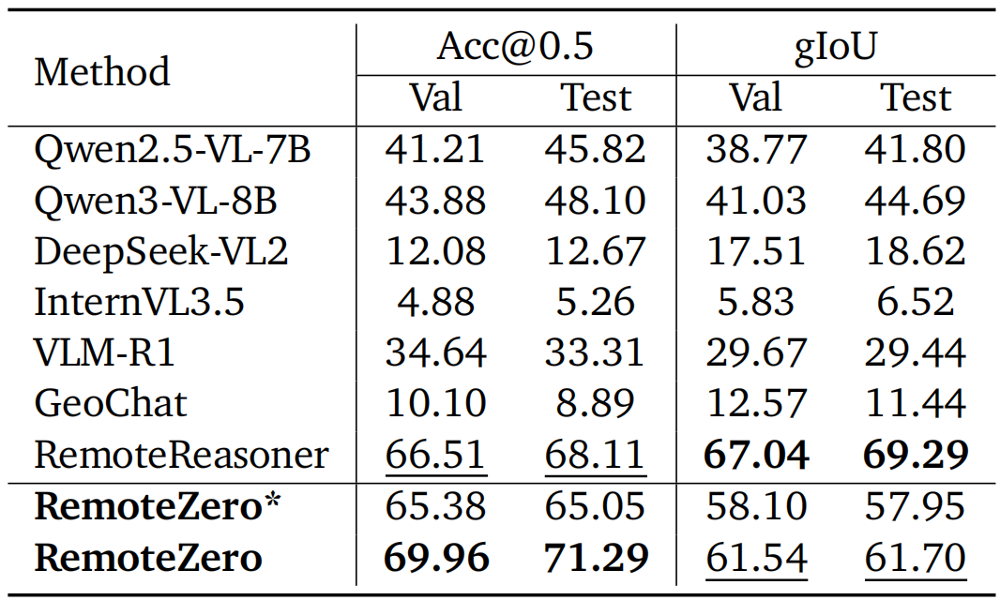
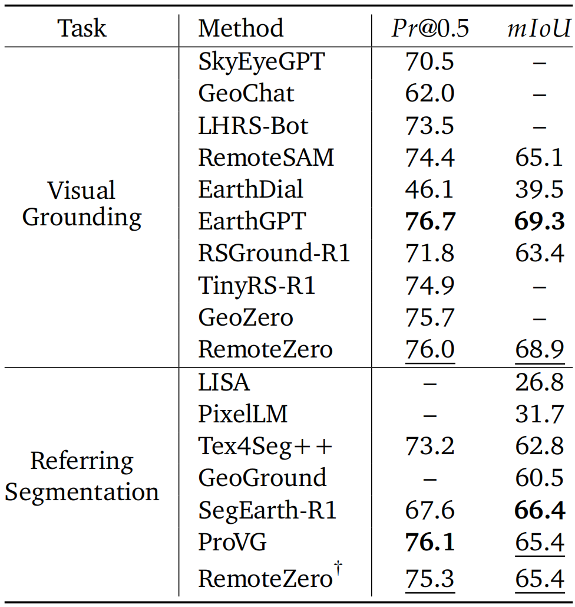

- We introduce RemoteZero, a label-free reinforcement learning framework that enables policy optimization directly on unlabeled Earth observation data.
- We explore a self-evolution paradigm for remote sensing MLLMs, offering a scalable route to continual improvement without additional supervision.
- We show that RemoteZero outperforms strong supervised baselines, transfers across spatial prediction tasks, and benefits from increasing training data.

Comparison with other MLLMs on EarthReason. '*' denotes supervised by an external verifier.

Application of RemoteZero to visual grounding and referring segmentation.